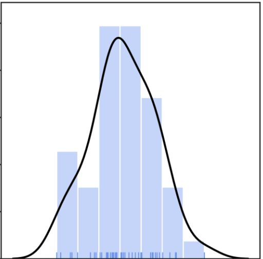
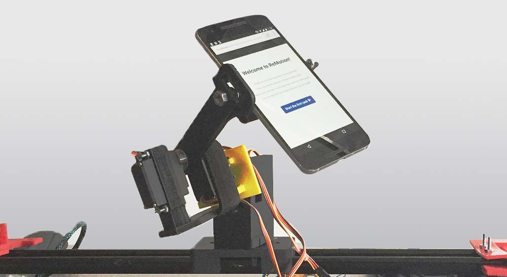
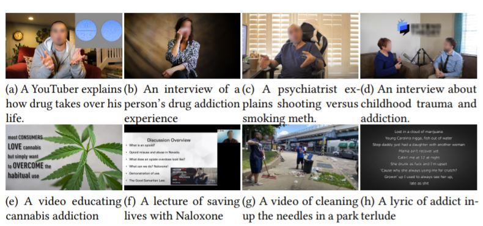
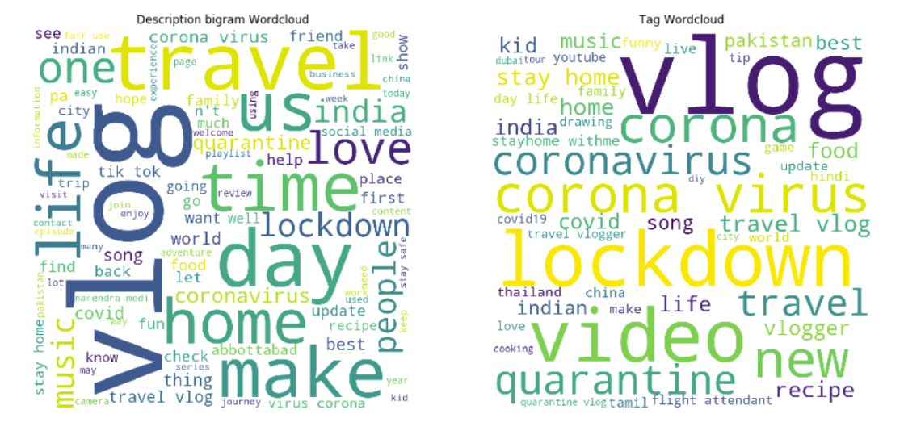

Senior Thesis
-

Active
Markov chain Monte Carlo
I am working with professor Michael Satz on Markov chain Monte Carlo methods, specifically in Bayesian data analysis.
[repo] (not too much yet)
Social Computing
-

Automotion: Predicting Emotion and Attention from Smartphone Behavioral Data
During summer 2021, I worked with Dr. Jeff Huang at Brown University with his Brown HCI team. I mainly worked on Automotion, software-hardware platform for running remote usability testing for mobile devices.
I modified, retrained models to predict users' affect from finger pressure and 6dof motion replay. I reviewed literature on affect prediction using mobile computing and rewrote the paper for resubmission. -

Investigating Drug Addiction Discourse on YouTube
by analyzing 166 YouTube videos. We found that YouTubers leverage videos to disclose personal addiction experiences, provide professional recommendations, and express addiction-related opinions and lifestyles. #StayHome #WithMe: How Do YouTubers Help With COVID-19 Loneliness?
Shuo Niu, Ava Bartolome*, Cat Mai*, and Nguyen B. Ha*
CHI '21 [pdf]
-

#TeamTrees: Investigating How YouTubers Participate in a Social Media Campaign
#TeamTrees is a year-long 2019 initiative that managed to raise $20 million before 2020 to plant 20 million trees. Using YouTube's metadata, we investigated how different category of content creators participate in a good-cause social media campaign via a case study of #TeamTrees.
#TeamTrees: Investigating How YouTubers Participate in a Social Media Campaign
Shuo Niu, Cat Mai, Katherine G. McKim, and D. Scott McCrickard
CSCW '21 [pdf]
-

#StayHome #WithMe: How Do YouTubers Help With COVID-19 Loneliness?
We used Weiss's loneliness theory to examine how YouTubers provided friend-like, mentor-like, and family-like provisions through videos in different styles during COVID-19.
I crawled the dataset for the project and automated the data pipeline. The whole lab then participated in ground theory analysis to come up with the provision and video styles specific to this campaign.
#StayHome #WithMe: How Do YouTubers Help With COVID-19 Loneliness?
Shuo Niu, Ava Bartolome*, Cat Mai*, and Nguyen B. Ha*
CHI '21 [pdf]
-

Emotional Analysis Via Content Creation on YouTube During COVID-19
This is my final project for my data science class with Nguyen Ha. We were interested in the emotional response and coping mechanism of content creators on YouTube during COVID-19.
We applied the fight-or-flight framework to analyze how content creators could contribute to mental health for audience. Our approach was to analyze the description and hashtags of the video and use Naive Bayes classifier to create a predictive tagging model.
[final report]
Science Education
-

Classroom Discourse Analysis for Student-driven Conversation
I worked with Dr. Sarah Michaels at the wonderful NGSX Learning Lab to observe and improve science curriculum for underfunded Worcester high schools. We in turn used our field data to improve professional development for K-12 science educators.
We looked at utterances and speech patterns of a teacher-student conversation and tried to find patterns of highly productive student-driven discussion.
[poster]
Other
-
 Maintaining
MaintainingYouTube Scraper and Decoder Python Package
Dr. Shuo Niu and I wrote the beginner-friendly YouTube crawler pipeline and a .json decoder specifically for retrieved file from YouTube API request. I packaged it and am currently the lead developer. My lab has been using this package for several projects. After I'm done with documentation and unit test, we will be ready to release the source code.
[stable release (limited docs)] -

Geovisualization of Garden of Bomarzo
During summer 2019, Dr. John Garton and I were building prototypes locally and developing proof of concept of a virtual garden visit in efforts to preserve the historical site.
I used Agisoft Metashape to render 3D models based on photos from Garden of Bomarzo. My early attempts at processing the model of the statues helped Dr. Garton’s colleague to secure a national Futures grant and helped Dr. Garton to present the project to grant boards.
[demo] [proposal]